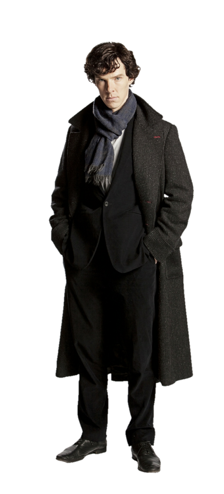
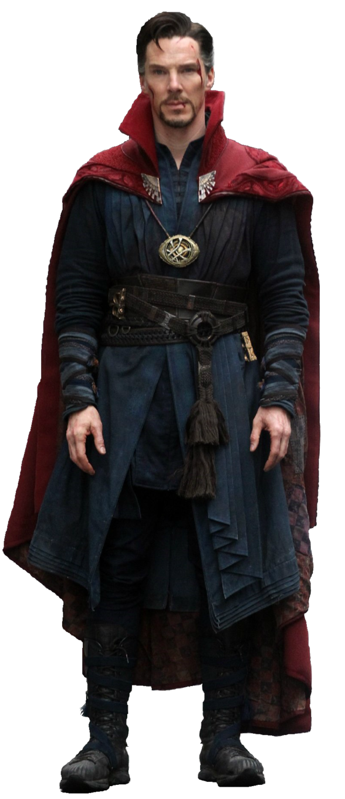
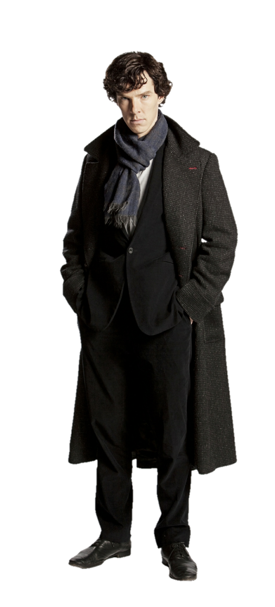
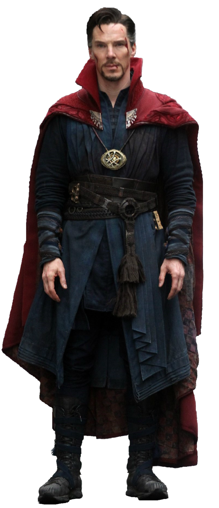

BENEDICT CUMBERBATCH


I am a British actor, perhaps best known for portraying
Sherlock Holmes and
Doctor Strange.
Over the years, I've sought to bring depth and authenticity to every character I inhabit.
Beyond the screen and stage, I am deeply drawn to the power of
storytelling that inspires and challenges audiences.
My journey is fueled by passion, creativity, and a commitment not only to the craft,
but also to causes and communities that hold great meaning in my life.
 




Connect for press, professional inquiries, or to stay updated with my latest projects.